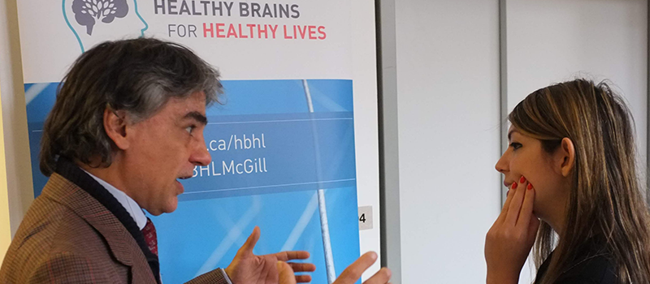

Alan Evans,
co-chair

Pedro Valdes-Sosa
co-chair
The Global Brain Consortium (GBC) is as a diverse network of brain researchers, clinicians, and institutions committed to achieving improved and more equitable health outcomes worldwide. It is a Canada-based initiative that builds collaborative and dynamic relationships among globally-oriented health researchers, domestically as well as internationally.
Our mission is to address the challenges that need to be overcome to drive multinational collaborative efforts in support of Global Precision Brain Health by strengthening linkages between neuroscientists across borders and disciplines.
Survey developed by GBC Workgroup 6 on Clinical Applications of EEG and needs of the community:
Actual bioethical, clinical, and information technology barriers to be overcome for the clinical translation of EEG biomarkers and neurological and psychiatric diseases of interest


The second GBC meeting was held in Varadero, and 76 delegates from academic institutions, governmental and global organizations attended in-person. During the event, 9 working groups met to present updates and ongoing activities. Highlights include: